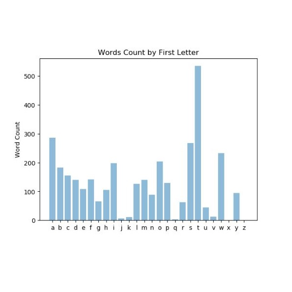

in Python
The program will read an input file and count the number of words by first letter. This is a practice in reading input files and tokenizing strings. To the left is a screenshot of the input file used. Any input file could be used with this program.